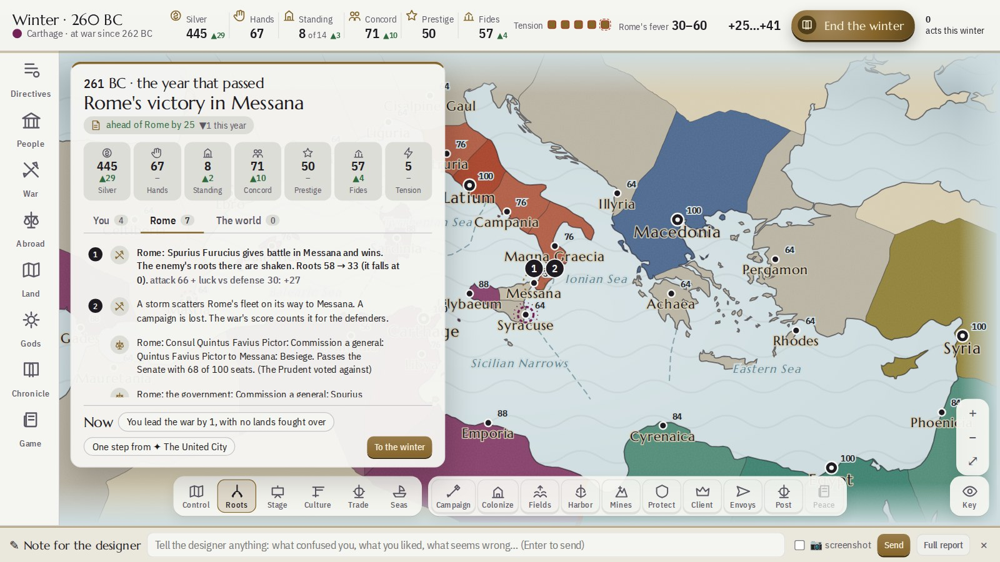
Two rival republics on one sea. History changes only when your choices change it.
A guide for your first chronicles. It covers the screen, how you decide, the stand-off, the council, the land, the world abroad, the war, the gods and the judgment at the end. It also has fifteen grand strategies for both republics, a threat chart for every rival plan, and the secrets.
It is 264 BC. Carthage rules the sea, and Rome has just finished taking Italy. Between them lie Sicily, Sardinia, Iberia and a dozen free peoples. Three Greek kings watch from the east.
You speak for one republic. You do not command it. Councils vote, consuls follow their own agendas, great families rise and fall, and the rival across the water has a plan of its own. Each winter you set what the republic pursues, and your men carry it out when the winter ends. You pay with Standing, silver and your good name.
Nothing is scripted. The First Punic War has no fixed date, Hannibal does not appear on schedule, and Carthage need not fall. The crises that arrive are the ones your choices made likely. Either republic can win, and both can still be standing, at peace, in 146 BC.
When the chronicle ends, the historians judge it. They weigh whose lands, tongues, gods, law and good name survived into the centuries after. Then the story runs forward to the year 2000 and shows the world your choices made. The strip over the map always says how you stand against the rival today. You can also set yourself an aim (a particular legacy) and work toward it.
Every winter opens on the Republic, the first view on the rail. At its top is This winter, an agenda of at most three decisions, the most urgent first, each with one button. Below are your four aims and the whole republic at a glance. In a usual winter you answer the agenda, check your aims and end the winter. Your men carry out the aims, and the year comes back as one card.
Behind the agenda, every decision is one of three kinds. Directives, the second view on the rail, gives each kind its own band.
Six policies: the tax, the works' share, the levy and the foreign stance on the Republic view and in Directives; and two that follow your Home aim: the religious stance and the policy toward subject peoples (Piety: traditional gods, subjects accommodated; Concord: tolerant, subjects blended; Glory: syncretic, subjects assimilated). The other four stay in force until you change them, and most changes go to a vote.
Four directives: War, Purse, Friends and Home. You choose what the republic pursues, such as pressing a claim to Sicily, building in Iberia or courting the Numidian kings. Choosing costs nothing. Your men carry it out when the winter ends: a set number of acts, one more or fewer for the man in charge.
What you do yourself, this winter. You place generals, back candidates, declare war or offer peace, demand redress and answer crises. These cost Standing, and many go to a vote.
Every action's button says who does it, in small letters under its name.
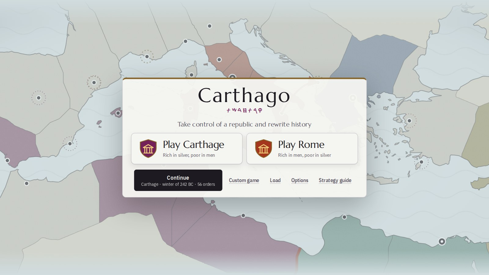
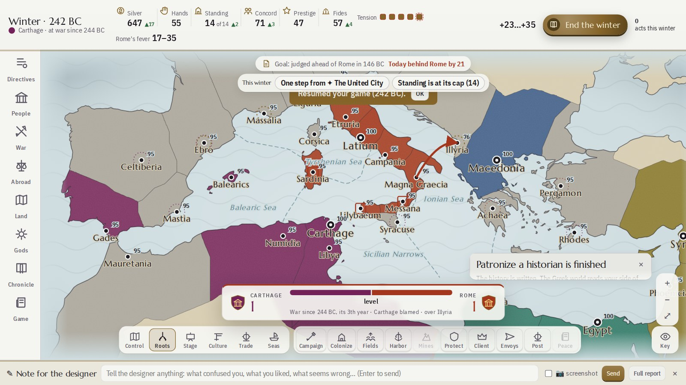
For your first game, open Custom game and play Carthage in the First War against a Gentle rival. Carthage starts rich, and the short game ends before early mistakes pile up. For your second game, do the same as Rome.
The map fills the screen, and each winter the Republic opens beside it. Hover any number to see why it has that value.
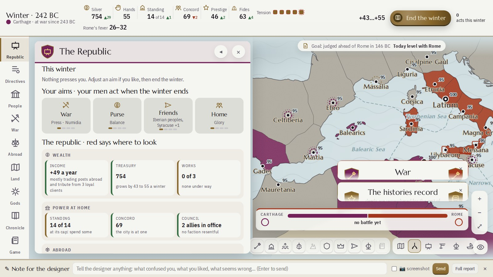
1 2 3 4 5 6 7 8 9 10 11Notices, such as a work finished or a deed recorded by either side, fold to one line over the map and open when you point at them. At most two show at once.
The lower half of the Republic is the overview. It shows the whole republic in four bands: Wealth, Power at home, Abroad, and War (War and peace before a war). Each part has one number, one line of why and a coloured edge. Green is good, bronze is worth watching, and red is trouble, so red says where to look. Click a part to open its view.
The other views show state. Each king, land, god, work or general is a row with its numbers and chips, and no buttons. Click a row, or its land on the map, and one card opens over the map with what you can do with that thing. Each action still says who does it. × closes the card.
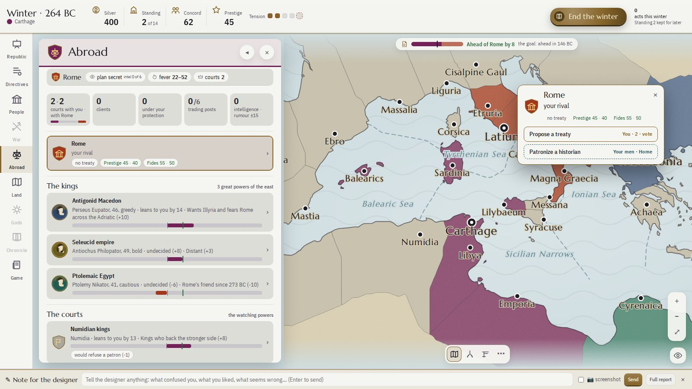
Hover any number to see every part that adds up to it, as a waterfall of gains and losses. The top bar's instruments also show their history winter by winter. The game's own terms are marked inside every tooltip, and pointing at one opens its definition. A click pins a tooltip. On a touch screen, press and hold to see a tooltip, and tap to press.
Each winter opens with the year that passed, as one card. At the top are the year's headline, how you stand against the rival and your numbers with their changes. Below are the year's three weightiest lines; All of the year opens every line, by side, with tabs for you, the rival, the world and what presses now. Each line with a place is pinned and numbered on the map, and its pin rings as you point at the line. Click a line to go to the view where you would answer it. At the foot, Now lists what presses this winter. Press To the winter to begin.
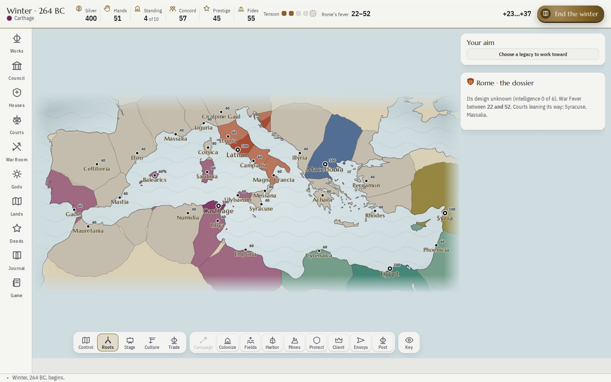
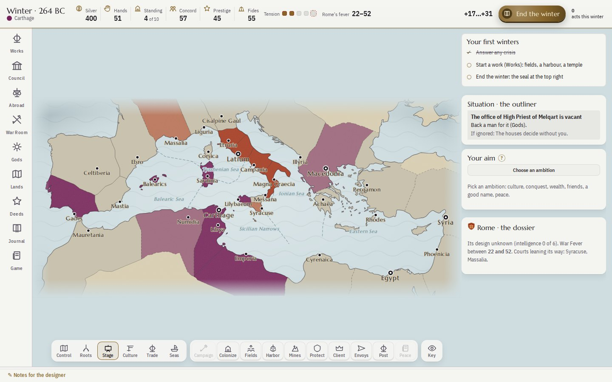
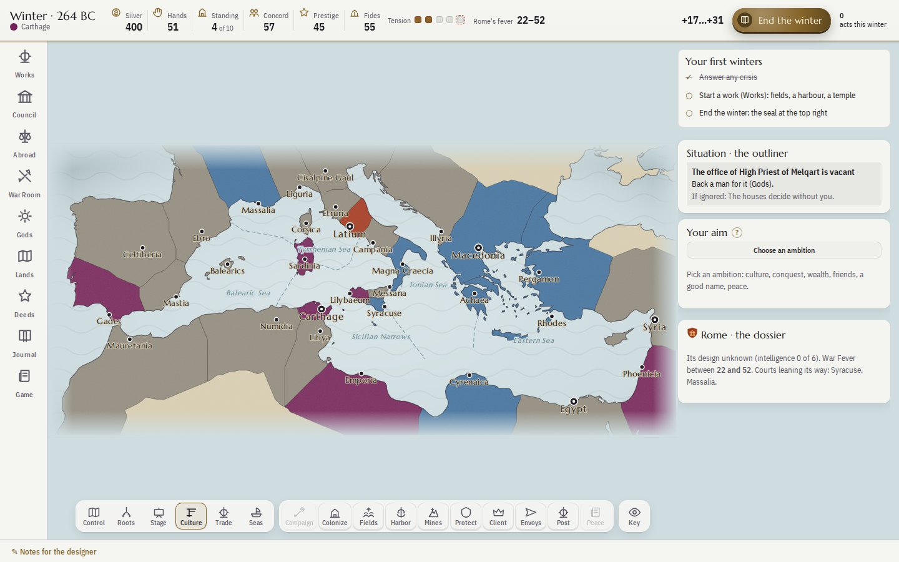
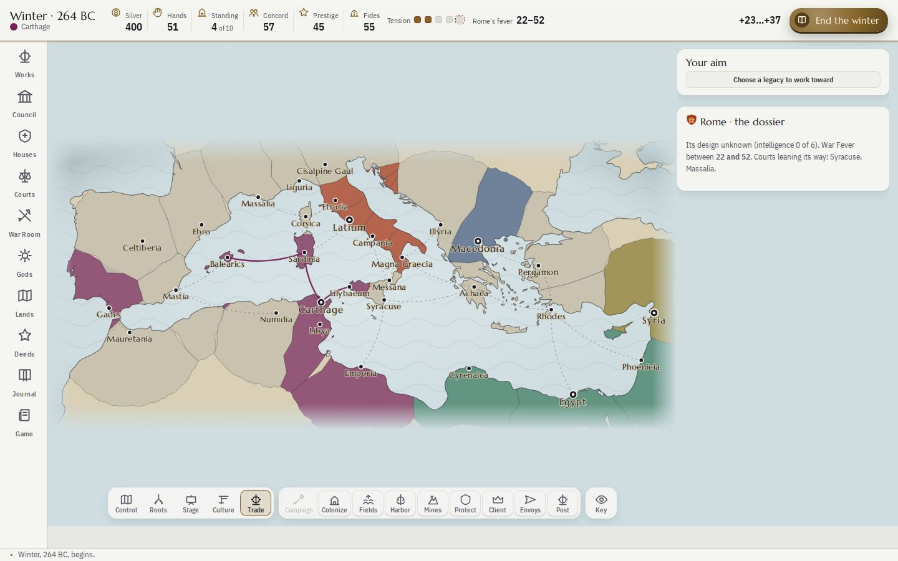
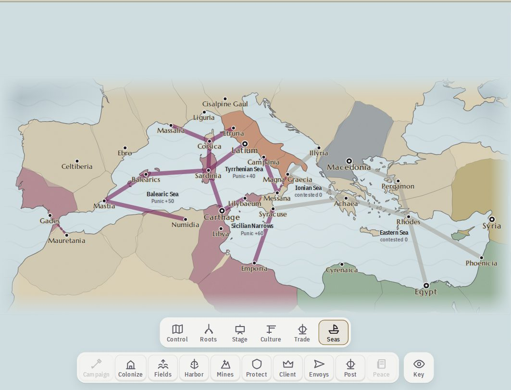
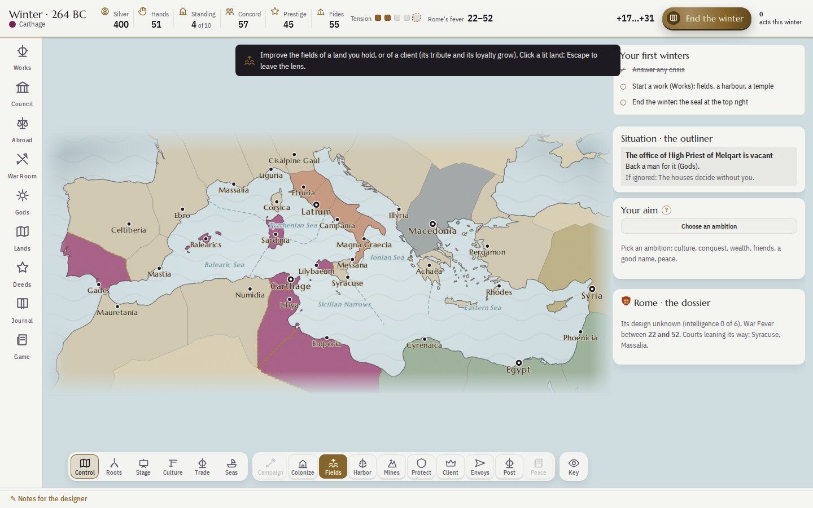
A walkthrough of a sound opening for Carthage. None of it is required. It shows the order in which a winter is played.
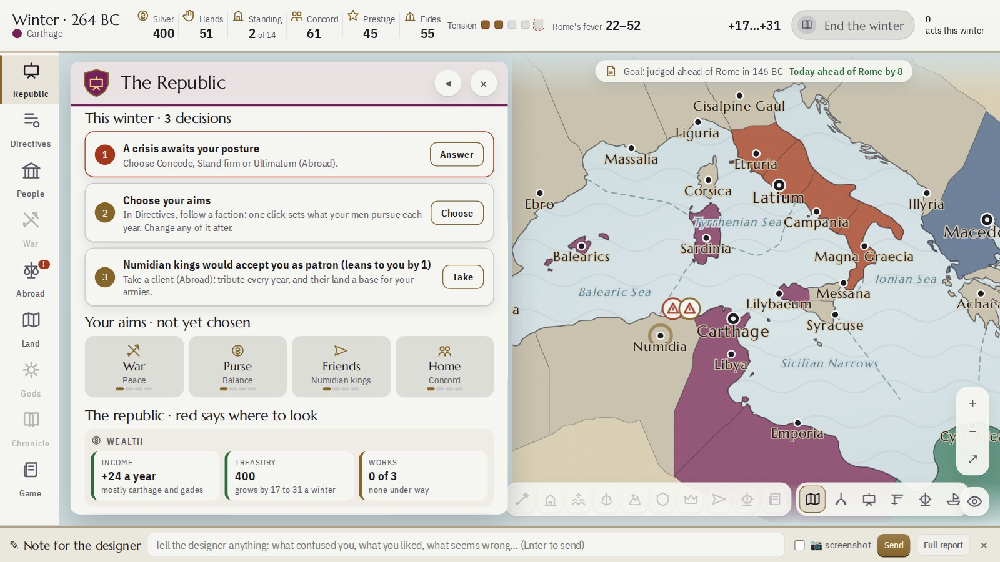
Press Play Carthage on the title screen. A two-step tour points at what needs you and at End the winter; Run the tour again is in Game if you want it back.
This winter lists at most three decisions, the most urgent first, each with one button (Answer, Choose, Place, Take, Back, Raise or Offer). Anything less pressing is folded under "and N more".
A crisis or an embassy is always the first item. Answer opens it in Abroad. Read the two claims, pick Concede, Stand firm or Ultimatum, and seal your answer (Chapter 5). The winter cannot end until you do.
A new game's aims already follow the largest faction. A click on any aim tile opens Directives to change them. One click on a faction follows its program. It sets all four aims to what that faction wants, and pleases the faction, once a winter. Or set each aim yourself. Each aim's men take a set number of acts a winter, one more or fewer for the man in charge, each paid at its own price; to have more done, give an order in a view (1 Standing). Two of the aims are run by men you place: the Steward (Purse) and the Envoy (Friends), each for a term, five years and three. Who they are is a decision; what they pursue is another.
Here the Numidian kings would accept you as patron. Take opens the action's card with its price. In any view you can also give an order of your own. In Land, press Choose a work and pick Improve the fields in a land. It reads "Your men · Purse", so your Purse aim's men begin it when the winter ends.
Look down the four bands for red. Here Works is bronze, because nothing is being built yet. Click a part to open its view.
Press End the winter. Your men act, and the sailing season plays out at once. The next winter opens with the year's card (Chapter 2). Click a line to go where you would answer it, then press To the winter.
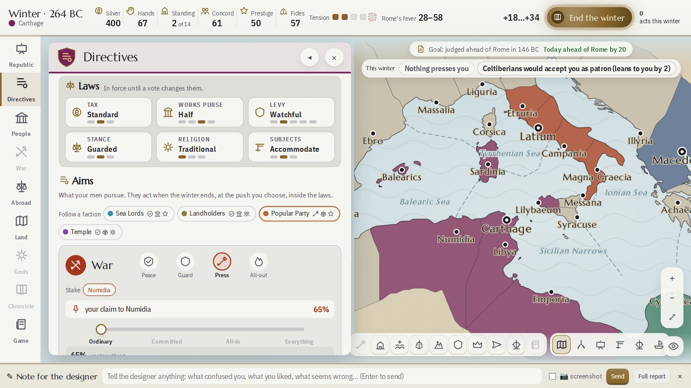
At most three works can be under way. A work that is not paid stalls, and after two unpaid winters it starts to lose its progress. Open only as many works as your purse can pay for.
Two resources come in and go out every year, and three reputations go with you everywhere.
From 0 to 14, earned each winter. You spend it on your own acts: the votes you bring (war and a treaty cost more), placing a general (orders against his temper cost more), lobbying a faction and persuading a consul. Your aims never spend it: your men pay in silver, by their effort. An order you give your men from a view costs 1 Standing when you give it (taken back the same winter, it comes back). Placing a man in an empty office or at the end of his term costs none; before his term, 2 and 1 for each year he had left. The winter's upkeep is automatic and costs none. Standing carries over, so a quiet year pays for a busy one. You earn more from the men you placed and from a united city (see below).
Income from your lands, the sea trade, clients' tribute and mines. Works, wages, an All-in effort and many actions draw on it. The treasury never goes below zero. Instead, Carthage runs up arrears to its mercenaries, and Rome's great houses lend, to be repaid by the citizens.
Every four years, or at a peace, the Council settles the treasury: how deep a chest your Steward keeps for war (none, 100, 200 or 400), and whether the Steward or the Envoy is served first when silver is short. Your men open nothing new that would take the treasury below the chest; a war may spend it. Free when it is due; reopening it sooner costs 3 Standing and 1 for each year left, and 5 Concord. There are no hands to count: the men the levy takes stop working the land, which shows in the year's income.
| Instrument | What it is | Raised by | Lowered by |
|---|---|---|---|
| Concord | How united your city is | Fear of the rival, games and festivals, the people's god honoured, a war that starts well | Bitter votes, overruled factions, long wars, defeats |
| Prestige | Whether you win your stand-offs | Stakes won, the rival giving way, peaces on your terms, deeds | Conceding, abandoning friends, losing wars |
| Fides | Whether you keep your word | Standing firm on just claims, kept promises, historians, deeds | Threats on weak claims, arming or warring without a just claim, broken protection |
The watching powers (the Greek courts, the kings, the free peoples) lean toward the republic with the better Fides and Prestige. A power that leans your way can become a client, an ally in war or a friend at the peace.
These are the large levers. Hover a number in the top bar to see every source of yours this winter.
Best lever: Concord. A trusting city (Concord 50 or more) earns you an extra point every winter, and a united one (75 or more) one more. A divided city (below 25) costs you one.
Also raised by:
Drained by: the votes you bring (war and treaties cost two), placing and recalling generals, lobbying a faction, persuading a consul, and a public gesture in a stand-off.
Save it: it carries over, up to 14. Anything earned past 14 is lost, so spend before you reach the cap (the overview warns you). As Rome, let the consuls act on their own for free, and persuade one only when his plan would cost you.
Best lever: content factions. Give them the votes they want, follow a faction's program now and then, and avoid overruling them in bitter votes.
Also raised by: games, festivals, honouring the people's god (Tanit, Ceres), a light tax, a victory or a stand-off won, and some fear of the rival (Tension, or a war that begins).
Drained by: a heavy tax, high mobilization, humiliations, bitter votes, and the weariness of a long war.
Best lever: build. Fields, harbors and mines raise your lands' yield for good, so over a long game a works' share of half or more pays for itself.
Also raised by: more lands, sea trade between your ports, trading posts abroad, tribute from loyal clients, colonies, the Egyptian grain treaty, secret routes beyond the Pillars (Carthage), booty and indemnities in war, a heavy tax.
Drained by: garrisons, mobilization, mercenaries' wages (Carthage), works, your men's acts and most actions. A war also cuts sea trade.
Best lever: people. Hands come from the people you rule, and fields make a land's people grow.
Also raised by: more lands, loyal Italian allies (Rome), hired companies (Carthage).
Drained by: mobilization (much more at the higher levels) and works under way. A thin census (Rome) also means fewer.
What they are for: the levies take them first, the works draw what they need, and the rest are idle that year. Unused silver is kept, up to the chest. Land shows where this year's silver goes.
Best lever: win your stand-offs. Take a crisis's stake, make the rival give way to a demand, win battles and take lands.
Also raised by: a peace on your terms, refusing a king's claim, warning a king away, deeds, an assertive stance (a little each winter).
Drained by: conceding, defeats, lost clients, abandoning a friend, bowing to a king, a conciliatory stance.
Best lever: stand firm on a just claim. Do it every time you can, and never threaten on a weak one.
Also raised by: a historian (a work), kept promises, deeds.
Drained by: ultimatums on weak claims, arming or declaring war without a just claim, a demand you don't back with war, abandoning a people under your protection, a ruler by decree. Taking a people under protection costs a little up front.
Content factions keep Concord high, friendly candidates become allies in office, and generals whose orders suit them win. Each of these raises your Standing every winter. Early on, carry one vote by lobbying to earn A Vote Carried, whose extra point lasts the whole chronicle.
Fear of the rival raises Concord. A little Tension at the right time can unite a divided city, and a long, complete peace can let your factions turn on each other. The Necessary Enemy strategy (Chapter 12) uses this.
The Mamertines appeal to both republics, a merchant is killed at Ostia, Saguntum asks for help. When the republics' interests meet, each chooses a posture in secret.
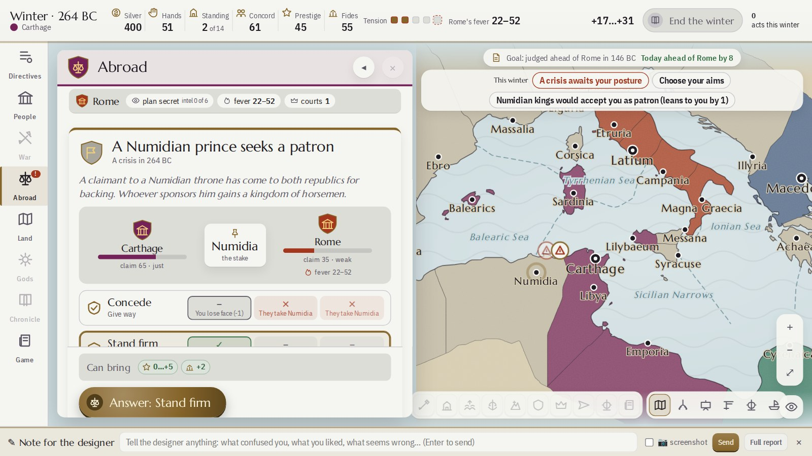
The stake goes to the side that holds out while the other gives way.
A demand for redress over a quarrel (Chapter 8) opens a stand-off too, on the same card. If the other side gives way, the demander gains face and the Tension eases. If it stands firm, the demander's claim grows by 15 and the refuser's falls by 5. The demander then has three years to make war over it, or the threat was empty (Fides −6, claim −10). The strip over the map counts the three years for both sides.
When the rival demands redress of you, its stand-off reaches you at the start of your next winter, and you answer it like a crisis.
Embassies come the same way. Kings ask for recognition, grain, friendship or protection. Each answer says what it brings, and an answer that is a gamble says so. Answering costs no Standing. Two reckonings also arrive as questions at the start of a winter: the trial of a beaten general, and the companies waiting at Sicca after a war (Chapter 9).
Making your posture public (Cato's fig in the Senate, Fabius's fold of the toga) is a toggle on the card. It costs a Standing and makes the rival likelier to give way. If you then back down, you lose more Prestige. Use it only when you will hold your posture.
Tension is shared by both republics and climbs with every stand-off. Once it is high, an ultimatum that meets a firm refusal is war. If you are not armed, do not threaten at high Tension. Lower it first with a friendship treaty, or by conceding something small.
Each quarrel keeps a record. Every land taken by force, every threat on a weak claim and every refused demand is added to the claims on that stake. Build your claim early and over years, and when the large crisis comes your claim will be the strong one.
The factions want different things, and the men in office carry out your aims. People shows the council, the offices and the candidates.
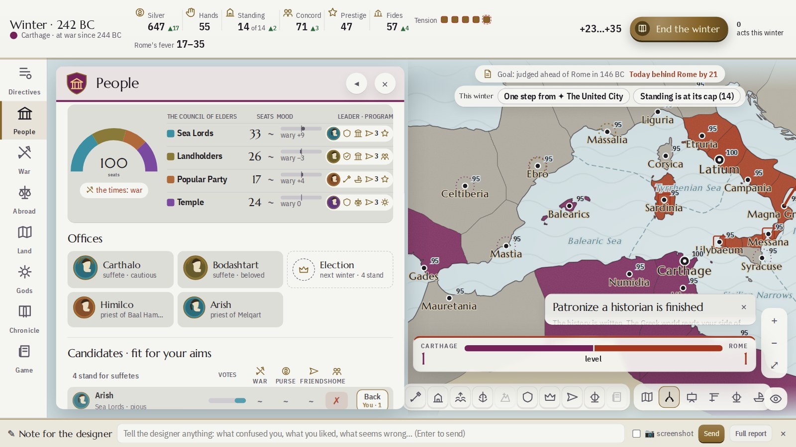
Each faction's program shows its leader and what it would have your War, Purse, Friends and Home aims be. Hover it for the leader's counsel. The chip under the arc gives the times (peace, tension or war). A man's temper tells differently in each. A greedy man builds cheaply in peace, and an ambitious consul drives the campaigns on at war.
The offices show the men who hold them, each with his temper. Your ally in office (a man whose faction's mood is 10 or more) earns you a Standing every winter. The candidates' grid sets each man against your four aims. A ✓ means the aim suits his temper and he carries it out willingly. A ✗ means it goes against him, and a ~ means neither. Back a man (You · 1) to add to his votes. The election slot in Your hand offers the candidate whose temper best suits all four aims.
An ally in office earns you Standing every winter. For Rome this counts twice, because consuls are your only generals. Back the ablest soldier before a war.
War, a change to a law, a colony, a treaty and placing a general go to a vote. Each is yours to bring. The vote is drawn as a seat arc of For, Wavering and Against. Click a faction's wedge, or its Lobby button (You · 1), to move it your way, though the faction resents being pressed. The odds sit beside the seal ("Passes 7 in 100"). A wavering faction decides by chance when the vote is called. The nearer its lean is to +10, the likelier it votes for, and lobbying a waverer past +10 makes its vote certain. The Standing and silver are spent even if the vote fails.
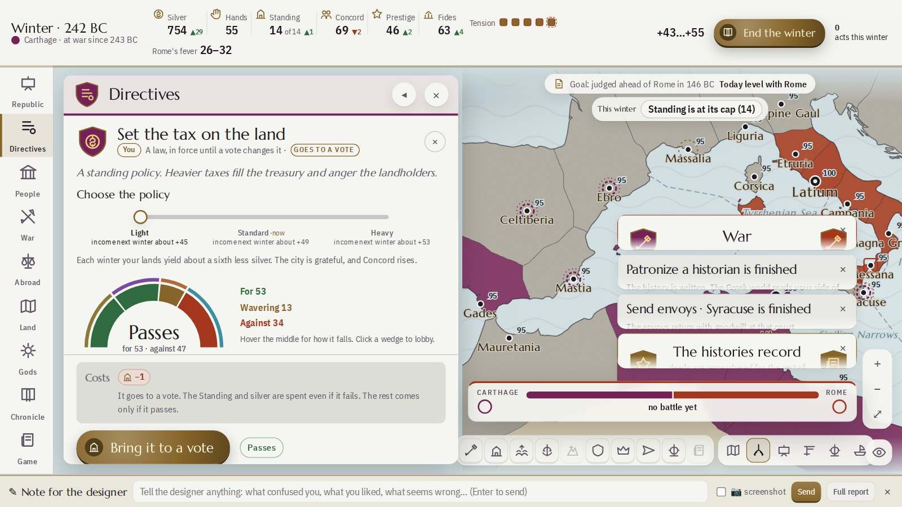
After a vote, People shows how every faction voted. Two folds at its foot hold Who wants what (each faction against the five issues a motion can touch) and every faction's houses and men.
The Council of Elders decides. If it deadlocks, the question goes to the popular assembly, which follows the Popular Party. Suffetes are elected yearly and cannot serve twice running. Any man of your houses aged 28 or more can be given a command, and a beaten general answers to the Hundred and Four.
The Senate votes, and a tribune can veto. Two consuls are elected each year, and each acts on his own. People shows what he means to do, and you can spend Standing to persuade him otherwise. Only consuls command armies, unless the Senate keeps a winning general in command as proconsul.
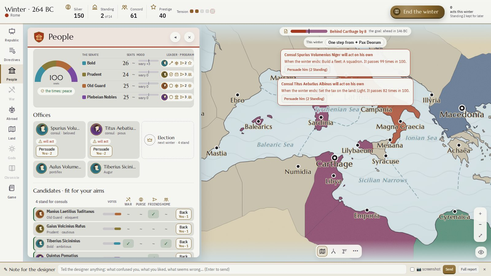
Fields, harbors, mines, temples and colonies are slow investments. Over decades they make a republic richer and more populous, and its hold on its lands firmer.
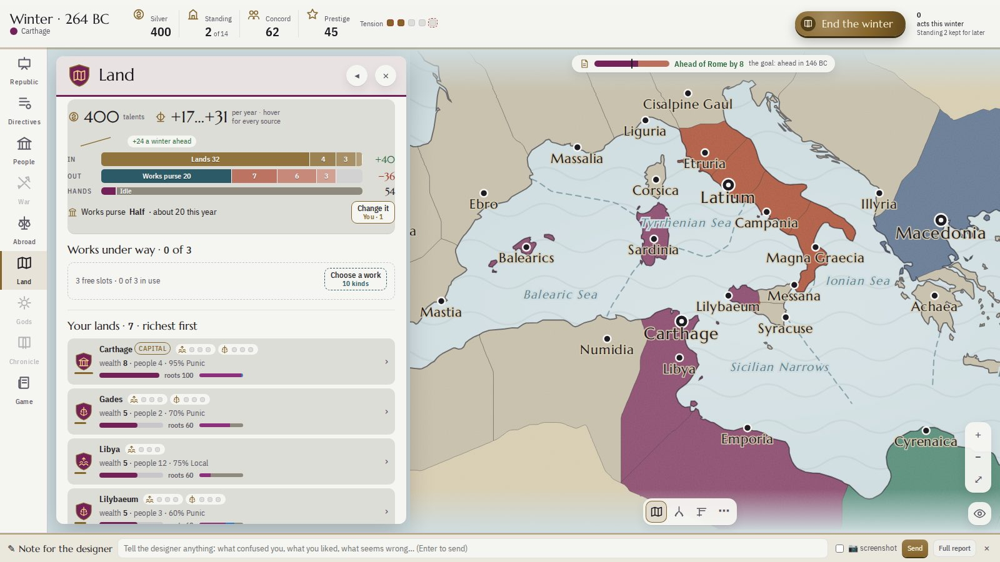
The works' share is one of the Laws: how much of the treasury the works may take each winter (nothing, a quarter, half or three quarters), and Change it sets a new share. The Steward pays the works in the queue's order, from the purse, keeping the chest. Click a work's row for its card. There ▲ and ▼ move it up or down the queue, and Abandon drops it. Both are free. A work advances by what it was paid, and its effect arrives when it is finished. A temple honours its god, a colony plants settlers, and fields raise a land's wealth for good and grow its people, who count for more when the chronicle is judged.
In a free slot, Choose a work opens the ten kinds, each marked Your men · Purse. Its tooltip lists the winters until each work repays its silver. Click a land's row, or the land on the map, and its card offers Fields and Harbor there. Each becomes an order for your Purse aim's men. The Purse aim also builds on its own. Set it to Build and choose where ("Build in Sicily and Sardinia"), and your men improve the lands there first and settle a colony if there is free land.
Fields grow people. People give wealth and weight in the judgment, and wealth builds more works. Colonists build for themselves, so works on your own colony cost less silver. You can also build fields and harbors in a client's land. Its tribute rises with its wealth, and it leans toward you for every level you build.
Your lands are rows, richest first. Each shows its improvements as pips, its wealth, people, tongue and roots. Pick a land on the map and its row lights, with its card. Below the lands come the routes beyond the known sea, your colonies, your clients and the peoples under your protection.
War damages works. A land that is harassed, besieged or in revolt loses half the progress of the work on it. Build in your heartland and your safe islands first, and on the frontier only in peace.
A work in a client's land depends on the client's loyalty. If the client breaks away, the work under way is lost, and the levels you finished stay with the land. Keep the client loyal (reward it, send envoys) while you build.
Whoever holds Gades can send a voyage beyond the Pillars (in Land). Routes go north to the tin isles, south down the African coast, and last around Africa to India. That voyage may not come back. It sails only after ten years on the African coast, from a harbour at Gades, and not for ten years after a loss. Each route pays every year while you hold Gades and the enemy does not hold the Balearic Sea (at war, only while you hold it). Two roads open by themselves. The Red Sea road needs a trading post in Egypt and a Ptolemaic court that leans your way. The Sahara caravans need Emporia with its harbour, and Libya, held in peace. The Land view says which are open, and why.
Nine watching powers, three great kings and a dozen free peoples. None of them acts on your word, and all of them notice what you do.
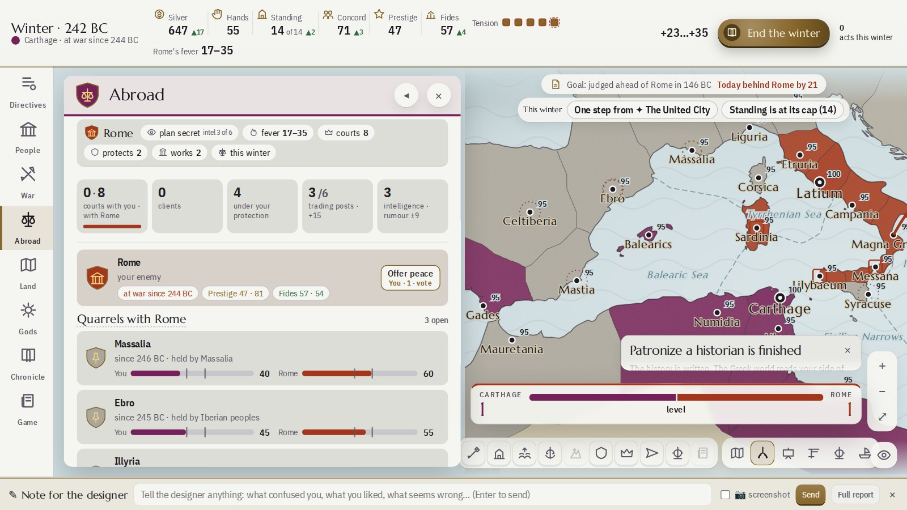
Each king, court and free people is a row. Its lean bar runs between the two republics, and a green line marks the point where it backs a side (for a client, where it pays tribute). Chips give its status, such as your client or envoys on the road. Hover a lean bar for every reason the power leans. Click the row, or the power's land on the map, and its card opens with what you can do.
Most of these actions are orders for the men of your Friends aim: Send envoys, Take as client, Reward, Protect and Post. The Friends aim itself is a list of up to three kings, courts or peoples, and your men work down it in order. Asking a king into your war is yours in person. At war, his row says beforehand whether he would join, from his lean, the goodwill at his court and your name.
If both republics protect the same people (Saguntum, Numidia, Massalia, Syracuse, Messana), a crisis over their land can start in which whoever gives way breaks a promise. The Second Punic War began this way. Protect a people the rival already courts only if you are ready to stand firm.
Macedon, the Seleucids and Egypt fight their own wars, take minor powers, and can join yours if they lean far enough your way. Hannibal's Alliance depends on this.
You never move armies. You raise them, place the men who lead them and give orders, and they fight the war. You make the peace.
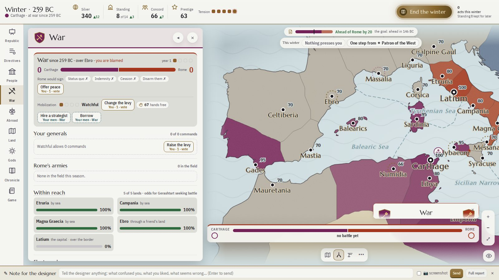
Declaring war is yours once the Tension reaches 4, and you name its stake as you declare. A scene marks the moment, and Abroad shows who the world blames. The courts turn against the aggressor, so a war on a just claim keeps more friends. At peace the War view shows the Tension as a ladder, each step with what it allows, and how ready you are if war came.
Five footings: Peace, Watchful, Armed, War footing, Total war. The levy is one of the Laws, changed by a vote (Change the levy). Each level allows more commands and makes every campaign stronger. Each also costs more upkeep and takes more men from the fields, which the year's income shows. Arming without a just claim while Tension is low alarms the rival and costs Fides.
You place every general yourself, with Place in War or the slot in Your hand. Choose the man, the land and his orders. The card forecasts the campaign: your attack against their defence, the luck of war, and the chance a storm scatters the fleet. Placing a general goes to a vote.
Each general's row shows his theatre, his target, his odds and whether he obeys. A meter gives the target's roots against the 0 at which it falls (a good siege season takes 15, a won battle 25). His orders are chips, and ✓ marks those that suit his temper. Click his row for his card, with Recall (and Prorogue at Rome). The War aim orders the generals in the field each winter, but an order you give by hand holds for the year. An order your men do not carry out is reported, with the reason, on its card before the winter ends and in the year's card.
The land you name at a general's commission sets his theatre (Iberia, Gaul, Italy, Sicily and Sardinia, Africa), and his orders stand until changed. Each season he picks his own target there by the odds and by his temper (an ambitious man goes for a capital, a greedy one for the richest land).
War lists the enemy's armies, each with what it is doing and where, the road it came by (its own land, a friend's land, or the sea) and how to close that road. Where the land is yours, the army's card offers Hold, which sets a general against it. The strip over the map names any land of yours with an enemy army and no general holding it.
The rival defends its homeland too. An army that besieges or seeks battle in its lands is met there before the rival campaigns abroad, and an army beaten in a land is not sent back there while the odds are against it. Make the friend an enemy marched through your client and that road closes.
A general can strike only what his army can reach. It marches from your own lands and from your friends' lands (your clients, and the peoples under your protection). Your squadrons carry it to a harbour one land beyond those. The land the war is over, while a free people still holds it (Messana, in 264 BC), is open to both sides, and whoever takes it holds the war's stake. Within reach lists every enemy land with how you reach it and your odds.
A general is supplied while men and pay reach him from your capital, through your lands and your friends', across the straits, and along seas the enemy does not hold. Cut off, he cannot replace his losses, and they grow each year. His row says so. A march through a friend's mountain country (the Alps: Liguria, Cisalpine Gaul) costs men on the passes, and the forecast shows it. Rome's Italian allies go over only to a Punic army at their gates.
Befriend the Ligurians or the Gauls, and Etruria is in reach over the Alps. Keep Massalia and the Iberians friendly, or hold the Tyrrhenian, or your general will be cut off as Hannibal was.
Carthage's companies want wages every year. What an empty treasury cannot pay is owed to them, drawn in War as a fuse that burns toward desertion at war and revolt at peace. The winter's upkeep pays the arrears whenever there is silver. If a war ends with the companies owed past the line of revolt, they wait at Sicca. You pay them in land in Libya, which the landholders resent, or make them wait for silver. Unpaid that winter, they rise, as in the Truceless War.
Rome's army costs blood. War shows the Italian allies' loyalty as a meter, and at war the upkeep honours them when it runs low.
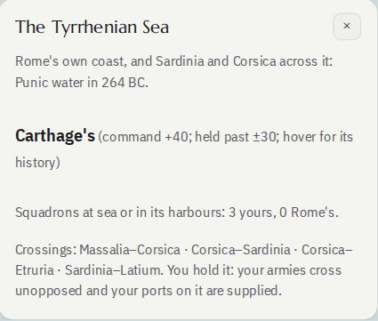
Every crossing lies in one of five seas: the Balearic, the Tyrrhenian, the Sicilian Narrows, the Ionian and the Eastern Sea. Each sea is held by one republic or contested, and War shows which. No army crosses a sea the enemy holds. An army crossing a contested sea may be caught at sea by the enemy's squadrons. The Strait of Messina is too short to close, whoever holds the Narrows. Carthage begins with three squadrons and the western seas. Rome begins with none and must build them.
Build squadrons from the rows under Fleets and seas in War. A squadron takes three winters, paid from the works' share of the treasury. At war, a war fleet is three squadrons in two winters, paid at once when the vote carries. Rome may borrow what its treasury lacks from its great houses, as it did for the fleet that won at the Aegates in 242 BC.
Each year, command of a sea moves toward the side with more squadrons there, and admirals fight for it. Place one like a general, with a sea and orders. Seek battle: a victory sinks their squadrons and moves the sea your way. Blockade: their ports on that sea are closed for the season, so their trade is lost and their besieged ports go hungry. Escort: your armies' crossings cannot be caught. Each admiral needs a squadron, and you can give an admiral at sea new orders. Storms sink squadrons, at sea and on the crossings.
A port whose owner holds its sea is supplied by sea, and no siege brings it below a floor. Blockade it the same season, or win the sea first. Otherwise you may besiege it for nine years, as Rome did.
The free peoples between the republics stand between your armies. Take the Mamertines or Syracuse under your protection before the war, and Italy (or Sicily) is in reach.
At the head of War, chips say which terms the rival would sign today. An offer is made of pieces, and you bring it to a vote. Choose the lands to ask for (any of theirs you fought over, never their homeland or their capital), on the card or with the Peace lens on the map. Set an indemnity on the slider (75, 150 or 300 talents, paid 15 a year), and choose whether to disarm them. Each piece makes them less willing, and the card shows by how much the offer clears or misses. When they would accept a peace, the strip over the map says so, with the terms.
If you lead the war clearly and have fought over lands they still hold, even a modest offer is accepted on your terms, and they cede those lands. Only the lands you campaigned in count, so if you want Sicily at the peace, fight in Sicily.
A republic beaten a second time by the same enemy cedes lands and is also disarmed. For a generation its war fleet is burned, its levies are kept to a watch, and it may make no war without leave. A disarmed republic arms only one level a year at war, and its capital lacks its engines. A victor at war with the enemy it disarmed accepts no terms and sends every general to the city. A general who beats the army before a capital, or besieges it for a season, invests it, and no sea can feed it. Carthage fell this way in 146 BC. In these chronicles either city can.
A proud city that is behind in a war weighs its Prestige against any peace, and so does your own council when you ask for one. Refuse the victor's terms and fight on, and you may turn the war, as Carthage did against Regulus. If you lose it anyway, the next peace disarms you, even if it is the first war you have lost.
Weariness grows every year of war. Concord falls, works stall, and the rival's allies can join. A war usually goes best in its first few years. Take your gains and make peace while you lead.
The gods never act themselves. The people who worship them vote and fight, and what the lands worship in AD 1 is part of your legacy.
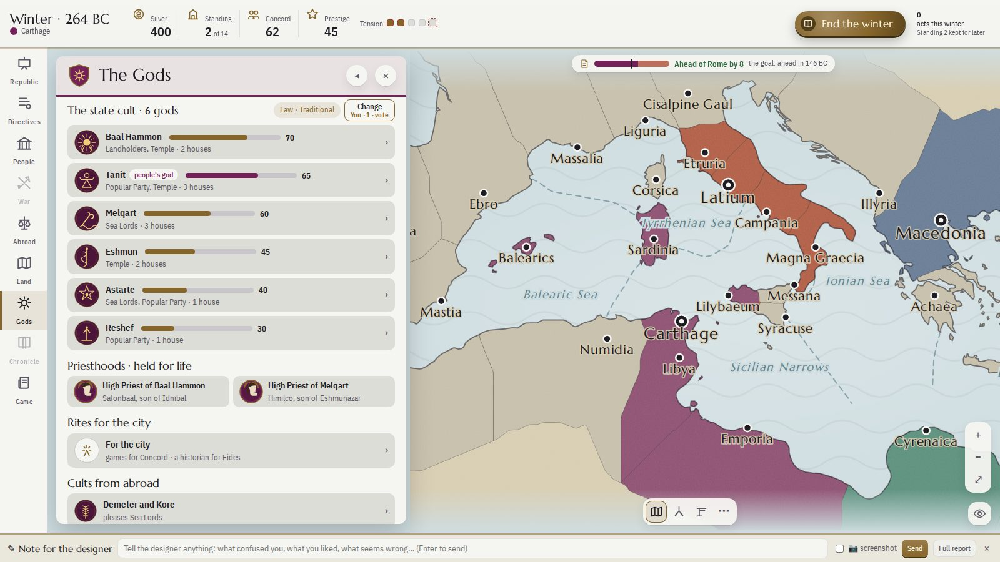
Every land has its gods, its law and its tongue, each a mix of Punic, Latin, Greek and local. Each drifts at its own pace under the land's ruler, its colonists and its clients. The policy toward subject peoples (it follows your Home aim) sets how: Assimilate (fast, and resented), Accommodate (slow and steady), or Blend (new mixed peoples and cults grow wherever cultures meet, and they are the most loyal to you).
The legacy weighs people, not territory. A small, crowded, Punic-speaking land counts for more in AD 2000 than a large empty one. Fields that grow people and colonies that teach them your tongue are the investments that last longest.
The two republics play by different rules because they were different states. Carthage was rich in silver and short of men, and Rome the reverse.
Strengths: the richest treasury, the best harbors, the secret sea routes beyond the Pillars, a navy that fears no one early on.
Weaknesses: few citizens, so armies are hired at the mercenary markets. Companies want wages every year. Unpaid, they desert, and in the worst case they revolt (the Truceless War). After a war you decide whether the companies at Sicca are paid in land or made to wait.
Tools: the merchant houses' loan in wartime, a general his army follows (a winning commander's companies do not desert), and a people who defend their own walls.
Watch: Libya. A war that squeezes your subjects can turn your heartland against you.
Strengths: the census. Citizen legions cost little silver. The Italian allies lend levies. Veteran colonies plant Rome on every land it takes.
Weaknesses: a thin treasury, a weaker navy, losses to storms, and consuls who change every year and act on their own.
Tools: loans from the great houses in wartime, prorogation (a vote each winter) to keep a winning general, and honours for the allies to keep them loyal.
Watch: the allies' loyalty. After a great defeat, allies can defect, and a thin census means no new legions.
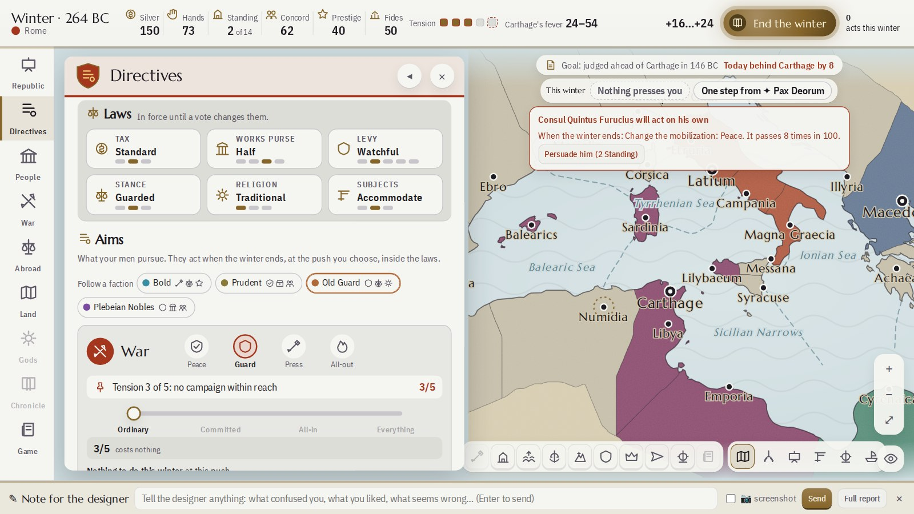
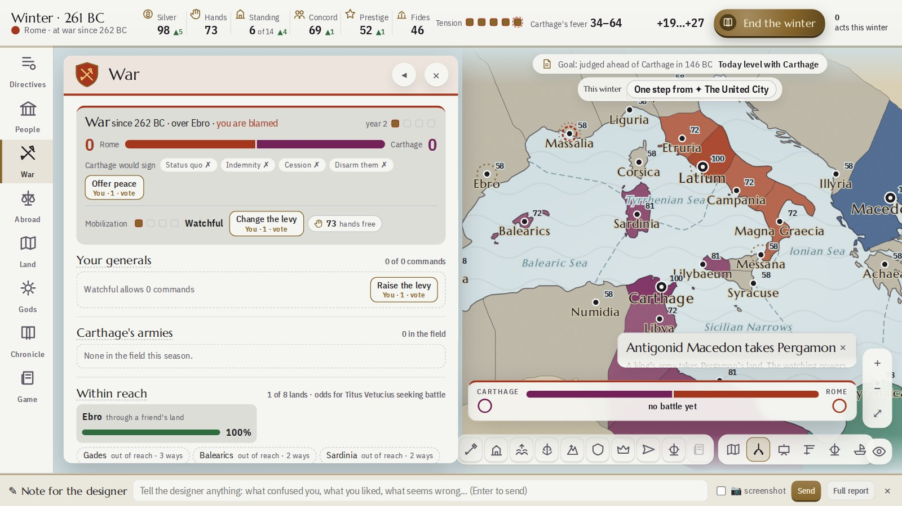
Your silver pays your army. Fill a war chest before you threaten anyone, pay the companies before the peace, and do not let arrears pile up in a long war.
Your manpower is your main resource. Strike hard, take the lands you fought over, then give the census a generation of peace to refill. Keep the allies honoured, especially after a defeat.
The rival plays one of these for the whole game. Your faction leaders urge them on you in their counsel. Each follows a path that was open in history, and each can win.
Purple is for Carthage, red for Rome, bronze for either side.
Win the silver country in the stand-offs, plant Punic colonies, and let the mines pay for the army that guards them.
Moves: protect the Iberians, work the mines, colonize Gades and the Iberian coast, sail beyond the Pillars. Watch: Rome's Ebro line and Saguntum.
Hold the fortresses with your best man, let Rome's consuls cross the sea and fail against them, and take an indemnity when Rome's allies waver.
Moves: harbors, a fleet, hold orders on the frontier, and time. Watch: do not let Rome choose the battlefield.
Court Macedon with envoys and a Greek face for your gods until it leans your way, then fight the war it joins.
Moves: envoys to Macedon, the syncretic stance, and waiting until the king's dial swings. Watch: time the war to the alliance.
Stockpile in peace, strike for a few years with hired companies and a hired Greek, take an indemnity, and pay the companies off before the peace.
Moves: a big treasury, the best companies, a short war. Watch: arrears. If the war runs long, the unpaid companies can revolt.
Take clients, reward them, and show the minor powers that your protection is worth having.
Moves: protect, then take clients, reward them, build fields in their lands, and send envoys to the kings. Watch: loyalty fades. Reward clients every few winters.
Keep the rival, keep the peace, trade with the world, and let fear of the enemy hold the republic together.
Moves: a conciliatory stance, a light tax, a large works' share, fields and harbors, trading posts. Watch: Concord without a threat to fear.
Settle citizens, honour the allies, and draw land, law and levies from one network.
Moves: colonies through Italy and beyond, honours for the allies, the plebs kept content. Watch: colonies are slow and fill your three work slots.
Expiate every prodigy, honour Jupiter, keep the Pontifex a friend, and lengthen the year to keep a good consul in command.
Moves: expiations, festivals, back your priests, then fight with a consul who stays. Watch: the omens after defeats.
Carthage hires its armies, so take the peoples it hires from as clients or as stakes, and leave it short of men.
Moves: protect and befriend the Numidians, Iberians, Celtiberians and Balearics, and press hard in their crises. Watch: it pays off slowly.
Strike hard for a few years, take the lands fought over or an indemnity while the census holds, then keep a generation of peace to refill it.
Moves: arm, back soldiers for consul, fight where you want land, dictate the peace. Watch: the census.
Keep faith, never threaten on a weak claim, and win over the courts that weigh good faith.
Moves: historians, envoys, firm only on just claims, no pretexts. Watch: Prestige can lag while Fides soars.
Call out a city's gods before its siege, hold what you take, and let Africa blend with Rome instead of being emptied.
Moves: war into Africa, evocatio before sieges, colonies and the Blend policy there. Watch: a long African war is a hard one.
Name your gods as the Greeks' own, adopt theirs, and let shared gods win the Greek courts.
Moves: the syncretic stance, foreign cults, Greek festivals. Watch: the pious factions at home.
Build a just cause, unite the city behind its own god and win a Greek court. Let the rival do the threatening, and go to war only on a just claim.
Moves: build claims, demand redress, stand firm, then declare on a just claim. Watch: a claim takes years to become just.
Arm, threaten, and march on the enemy's city, whatever it costs the republic afterward.
Moves: total mobilization, sieges of the capital, and no peace until the city falls. Watch: the cost afterward. A conqueror's republic may not stay a republic.
You do not have to pick a strategy at the start. A faction leader's counsel, on his program in People, urges the plan nearest his agenda. Many good games switch halfway, from building to striking.
The rival plays one plan for the whole game, at one of four levels of skill. A higher level plays better and gets no bonuses.
The dossier, a row of chips at the head of Abroad, tells you what you know: whether the rival's plan is still secret, the rumour of its War Fever and how many courts lean its way. Open trading posts and your merchants narrow the rumor, hear the rival's intentions, and in time learn its plan by name. Once they know something, Directives also shows the rival's aims.
How dangerous each plan is when a statesman plays it, as rated by the game's own test games over many chronicles. More stars means stronger against the other plans.
| If you play Rome, Carthage may play… | Threat | If you play Carthage, Rome may play… | Threat |
|---|---|---|---|
| Patron of the West | ★★★★ | Blood, Spent in Short Wars | ★★★★ |
| The Sea Wall | ★★★★ | Patron of the West | ★★★★ |
| Hannibal's Alliance | ★★★★ | Evocatio and the Afro-Roman Bridge | ★★★★ |
| The Barcid Gamble | ★★★★ | Delenda Est | ★★★★ |
| Silver in a Burst | ★★★★ | Strangle the Markets | ★★★★ |
| Delenda Est | ★★★★ | Pax Deorum | ★★★★ |
| The Necessary Enemy | ★★★★ | The Latin Name | ★★★★ |
| Righteous War | ★★★★ | Fides for the Greek Audience | ★★★★ |
| The Greek Face | ★★★★ | Righteous War | ★★★★ |
| The Greek Face | ★★★★ | ||
| The Necessary Enemy | ★★★★ |
The rival's early moves show its plan. Envoys to Macedon suggest Hannibal's Alliance. Colonies and honours for the allies mean the Latin Name. A treasury that grows while nothing happens is Silver in a Burst getting ready. Clients courted everywhere mean Patron of the West. A rival that keeps arming without a claim is likely playing Delenda Est.
Against Silver in a Burst, make the war long, so its companies fall into arrears. Against Patron of the West, court the same peoples first, because a client cannot have two patrons. Against Hannibal's Alliance, send your own envoys to Macedon. Against Short Wars, hold and refuse the decisive battle until its census runs thin.
The historians record some acts at once as deeds. A deed pays within the same chronicle, and nothing carries over to the next game.
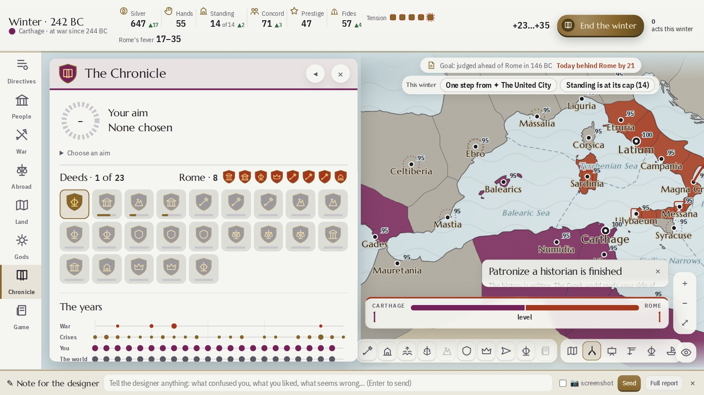
A lit badge is a deed recorded. On the others, a bar shows how many of its needs you have met, and a hover lists them as a checklist. Click a year on the timeline to open that year. Under it the journal is folded year by year, with filters for your decisions, wars, crises and the houses.
There are thirty deeds in eight styles. A few are deeds of the ending (Two Suns, The Republic Endures, The Punic Atlantic). They are judged as the chronicle closes and count in the legacy instead of giving a boon. The counter-historical deeds (Rome ended, the Punic Atlantic, the Merchant Peace, the Leash, Righteous War, the Republic Endures, Two Suns) are rare by design. Each asks for something that never happened, and a good rival earns one in perhaps one chronicle in ten. Every other deed, once recorded, gives you a boon for the rest of the chronicle, such as a bonus in campaigns, a friendlier court, a cheaper colony or more Standing. Some hints:
| Style | Some deeds | A hint |
|---|---|---|
| Conqueror | First Blood · A Land Taken · The Peace of Lutatius | The Peace of Lutatius is won at the peace table. Ask for the lands you fought over. |
| Barcid (Carthage) | New Carthage · The Silver Road · The Punic Atlantic | It all starts at Mastia, the silver country. |
| Merchant | A House Abroad · Six Harbors · The Merchant Peace · Two Suns | The first trading post is an easy deed and a lasting boon. |
| Patron | A Friend Among the Numidians · Patron of the West · The Leash | Protection first, clientship after. |
| Posturer | The Fold Drops · Just Claims · Righteous War | Just Claims needs time. Stand firm on a just claim, many times. |
| Priest | A Temple Built · Pax Deorum · Evocatio | A temple is a work like any other. Start one early. |
| Republican | A Vote Carried · The United City · The Republic Endures | Win a close vote by lobbying. |
| Colonist · Kingmaker | Settlers · The Latin Name · A King's Ear · Philip's Pact | A great power seldom joins your war. Court it for years. |
The strip over the map names a deed you are one step from ("One step from…"). An easy early deed is often worth going out of your way for its boon.
The legacy stays closed until the chronicle ends. It then shows the world your choices made, in three tabs. Who won gives the judgment (whose age it was, where your history left ours and how far) and the rival's plan. How the future changed runs through the eras from AD 1 to the year 2000 on a slider, with each era's map beside ours. Why gives the hinges (the decisions that turned it) and What if….
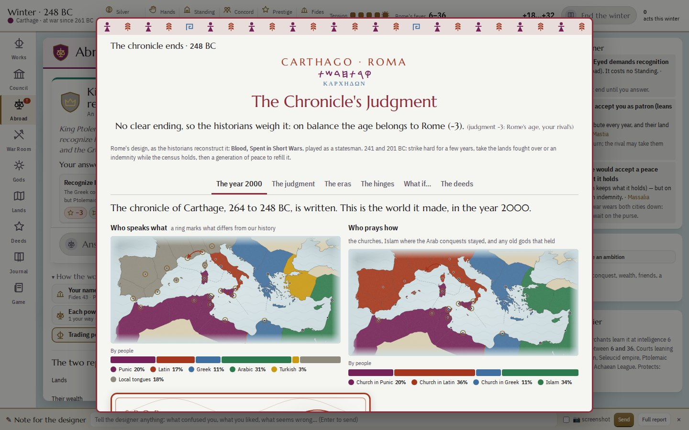
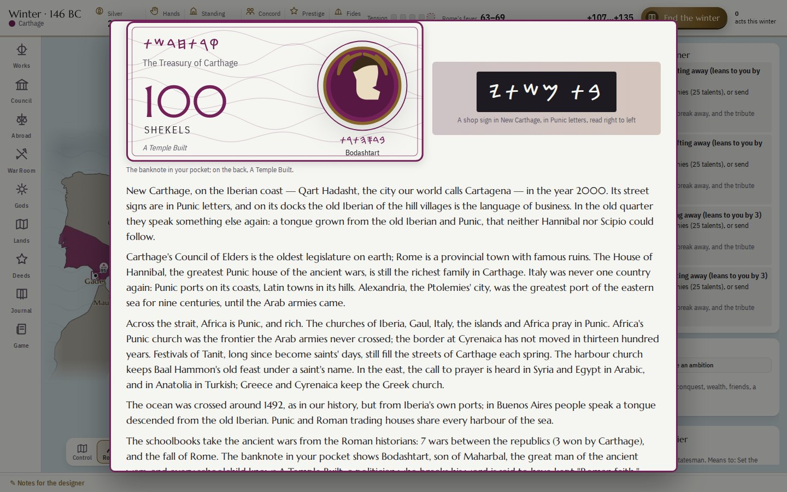
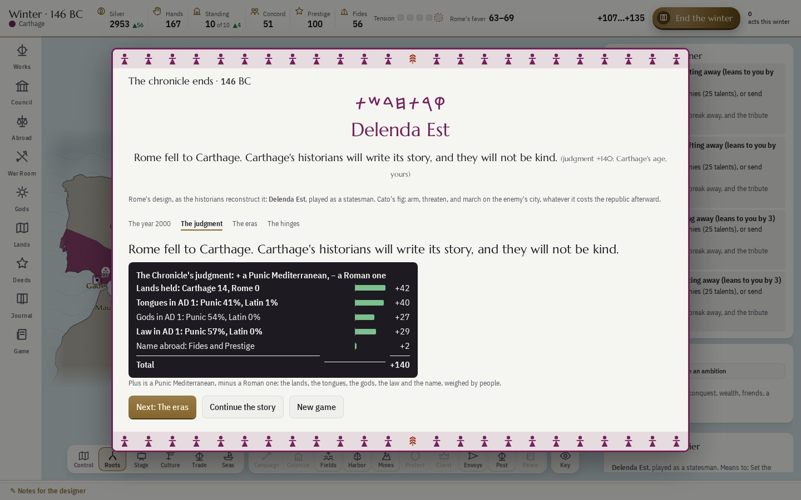
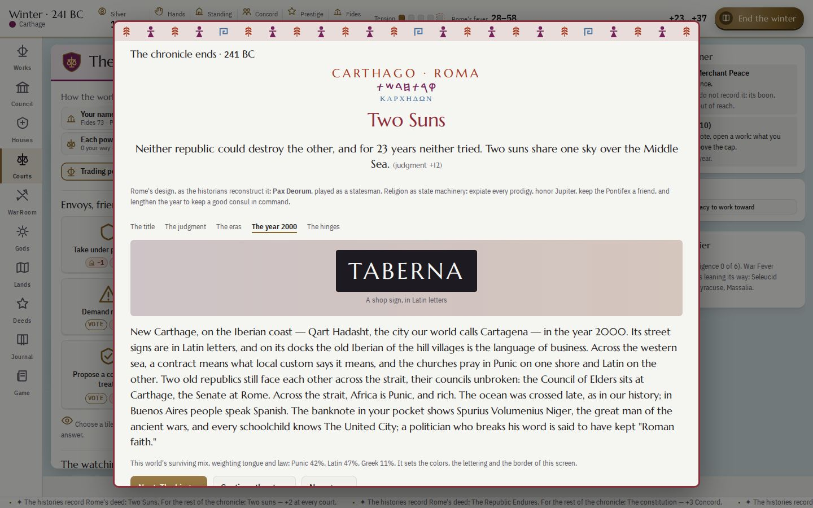
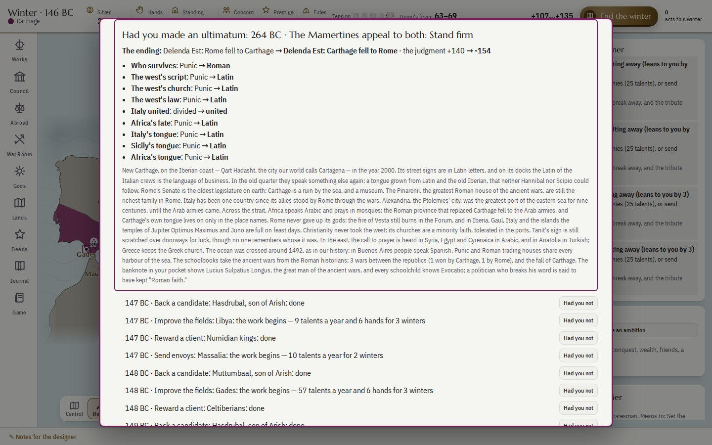
What survives depends on what you leave behind. A standing republic spares its lands the later conquests. Africa, Syria or Egypt held by Carthage or Rome at the end never become Arabic, and Anatolia held never becomes Turkish. Keep your own gods strong and your religion traditional across a faith as large as an empire, and they may outlive Christianity. This happens in perhaps one chronicle in ten.
An aim is an ambition for the chronicle: a focus with three or four targets, measured as you play, each with the lever that moves it. It changes nothing in play, does not count toward the score, and the rival never knows it. When the chronicle ends, the judgment tells you whether you reached it. Choose one in the Chronicle, under the ring. The difficulty says how often the computer reaches it without aiming for it.
| Focus | Aim | The targets | Difficulty |
|---|---|---|---|
| Culture | The Punic West / The Latin West | The West speaks your tongue, prays to your gods and lives under your law; colonies founded | Hard |
| Conquest | Mistress / Master of the Middle Sea | Lands held; Sicily and Sardinia; a peace that cedes land to you | Hard |
| Wealth | The Merchant Republic | Income a year; levels of fields, harbors and mines | Moderate |
| Friends | Patron of the West | Loyal clients; peoples under your protection; watching powers on your side | Hard |
| Good name | Carthage's Good Name / Roman Faith | Fides; Prestige; the world reads your historians | Moderate |
| Peace | Two Suns | Both capitals stand; forty years at peace; Concord; still a republic | Moderate |
| Destruction | Roma Deleta / Delenda Est | The enemy's city taken, and still a republic after it | Very hard |
| The ocean (Carthage) | The Punic Atlantic | Gades and Mastia; Iberia speaks Punic; mines in Iberia; secret routes | Very hard |
| Blending (Rome) | Afro-Roman Africa | African lands held or befriended; a Latin blend spoken; the Blend policy | Very hard |
Things worth knowing early, the common mistakes, and the terms.